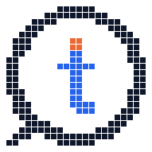
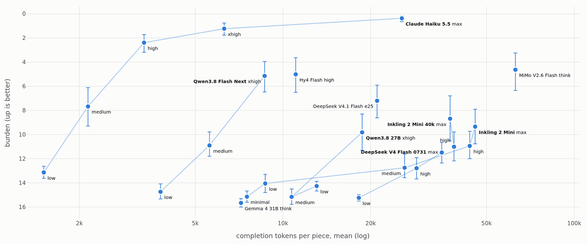
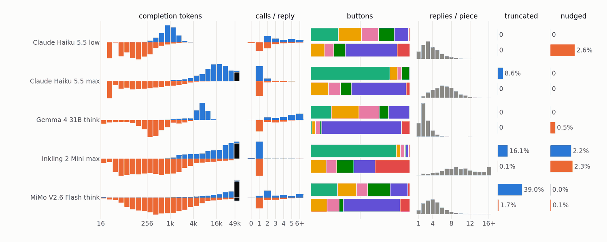
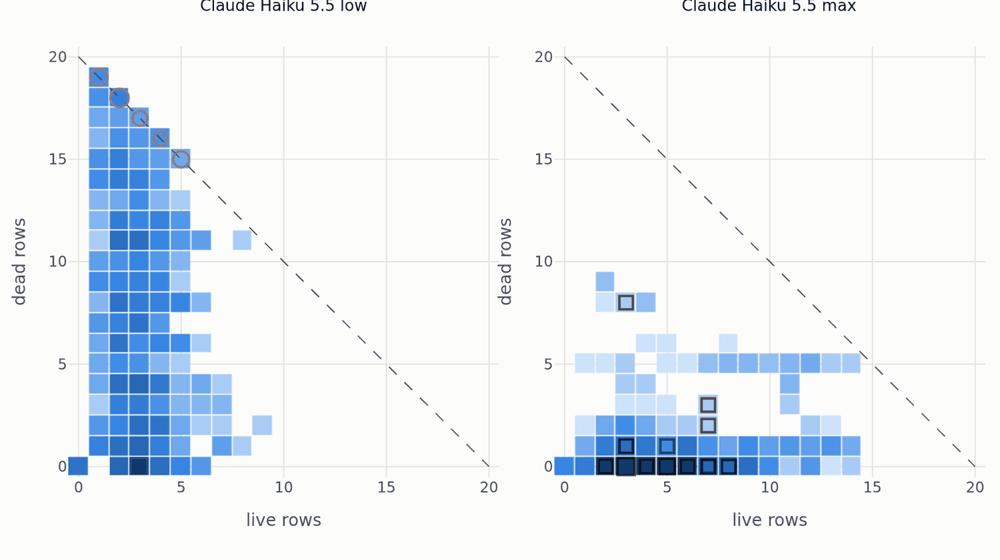
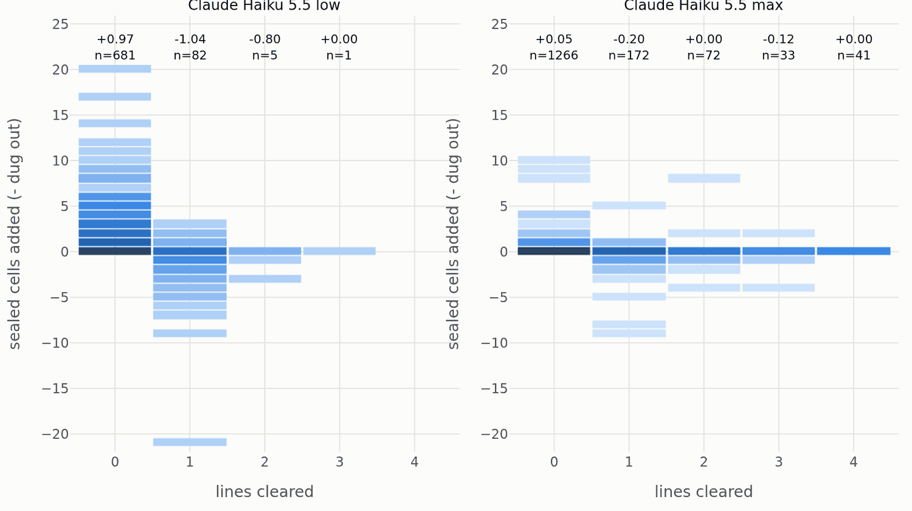
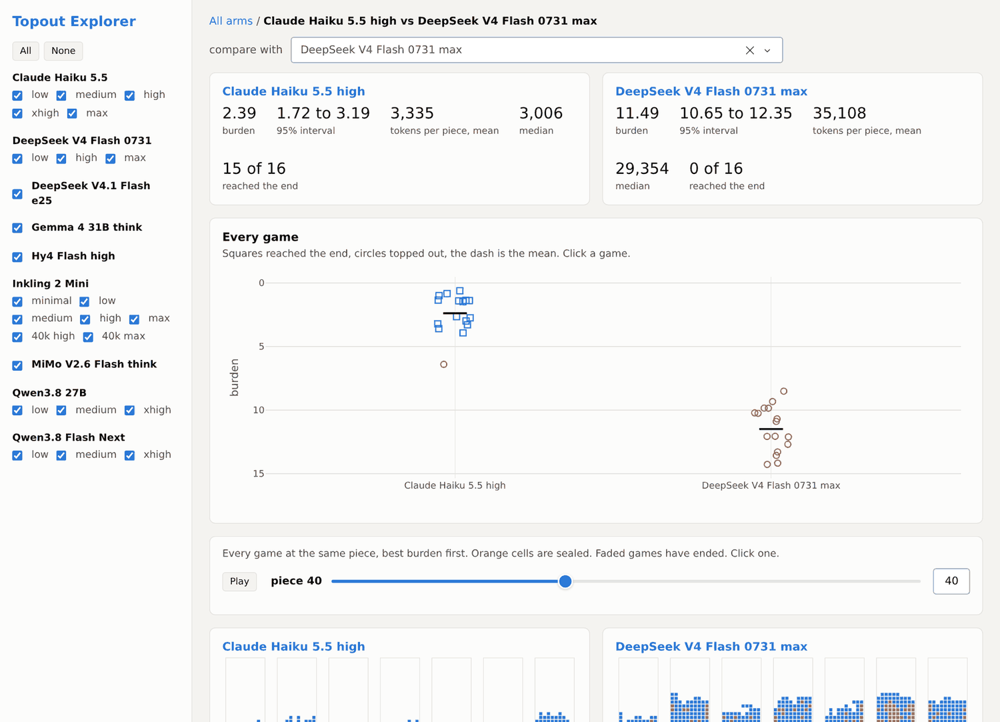
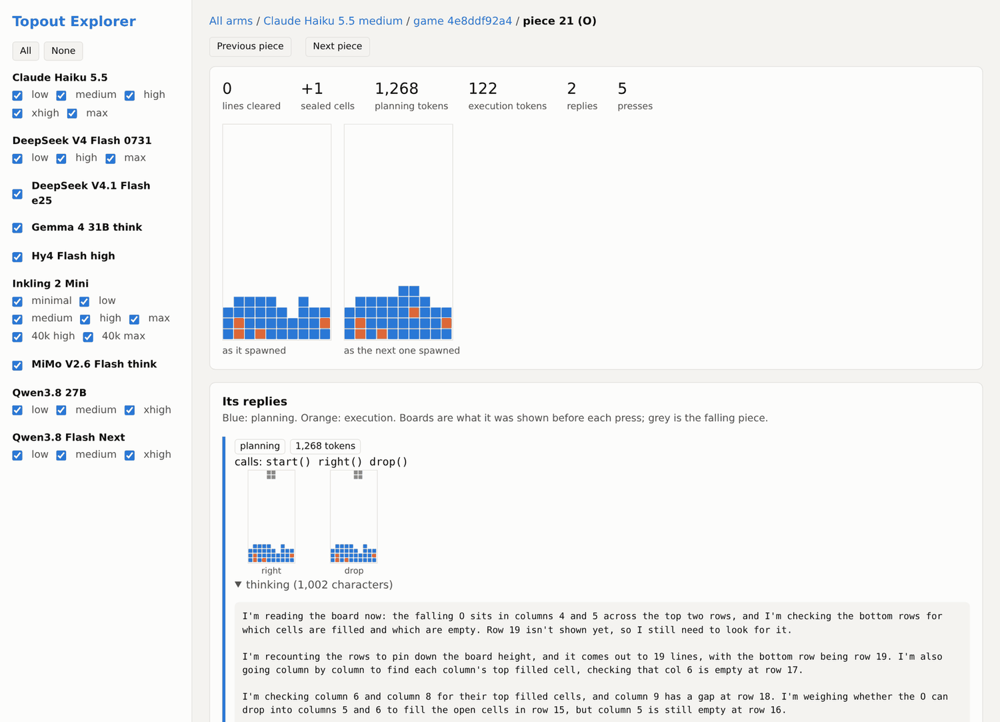

topout-benchLLMs play NES Tetris® one button at a time, through tool calls. The game waits while they think, but every press costs time. topout-bench records every board, every thought and every press, and gives you a way to look at them: from all the models at once, down to one decision.
One hundred pieces, or until the stack tops out. Any OpenAI-compatible endpoint that parses tool calls can play.
Settled blocks, the falling piece, the next one, lines and score. Reading pixels is a different test.
start, left, right, rotate, drop, wait. Nothing is forced, and no argument to get wrong.
The emulator waits for the model, so a slow GPU plays the same game. Every press lets the piece fall.
A plan stays in context while it is carried out. The next piece starts fresh, on whatever board is left.
A final score says almost nothing about how a game was played. These do. The pictures are snapshots: the data has moved on.
Burden is the damage a player carries: rows it can no longer clear, averaged over the whole game, with every turn after a top-out counted as a full board. Up is better, left is less thinking.

Planning, in blue, against execution, in orange: how long it thinks, how many calls it makes, which buttons it likes, and where it gets cut off.

Every board as live rows against dead ones. A dense corner is a good player; the way it smears is a style.

Lines cleared against holes made. Erosion or catastrophe, singles or saving up for four.

Every view is a click from the last, and every view is a link. It runs on your machine, on a copy of our games, yours, or both side by side.
Every model and effort, as a ladder or at its best.
All its games together, piece by piece, next to another's.
Tokens, damage and every board it faced.
The thinking, the calls, and the board before each press.


The games are a public dataset: one raw journal each, everything the model saw, thought and pressed. Nothing is summarised away, so you can ask questions we have not.
An arm is a served model: the quantisation, engine, template and token limit are all in it. A strong player's boards are easy because it kept them easy, so nothing here yet separates skill from situation. What we tried, what failed and what is still open is written down.